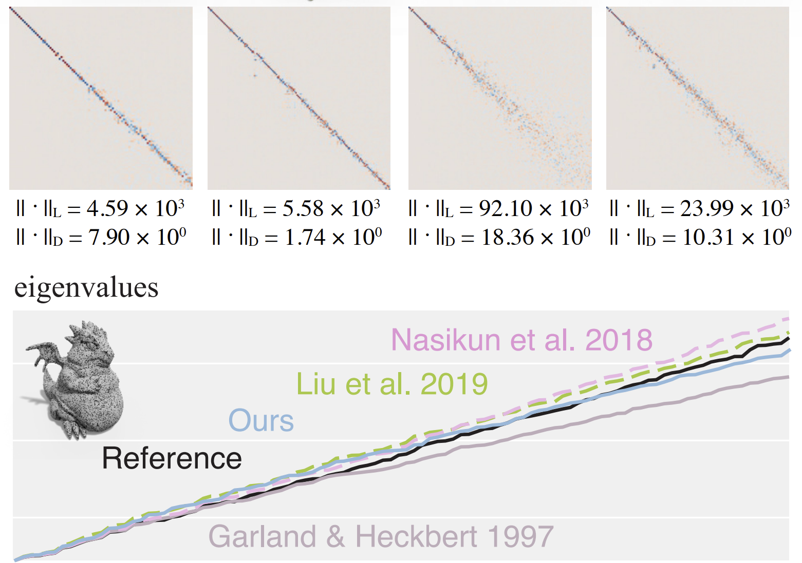

| Properties | Does it hold |
|---|---|
| L is symmetric | - |
| L is positive-semidefinite | - |
|
L is an M-matrix its off-diagonal entries are nonpositive yet the real parts of its eigenvalues are nonnegative |
- |
| Every row sum and column sum of L is zero | - |
| The smallest non-zero eigenvalue of L is called the spectral gap. | - |
To evaluate different Laplacians: compare the first k eigenvalues with respect to the cotangent Laplacian
Report for each Laplacian, the L2 norm distance between the vectors of size k
L -> v = (eval1, eval2, …., evalk)
Cotangent Laplacian Lc -> vc = first k eigenvalues of the cotangent Laplacian
Report for each Laplacian || v - vc ||
| Properties |
|---|
|  |